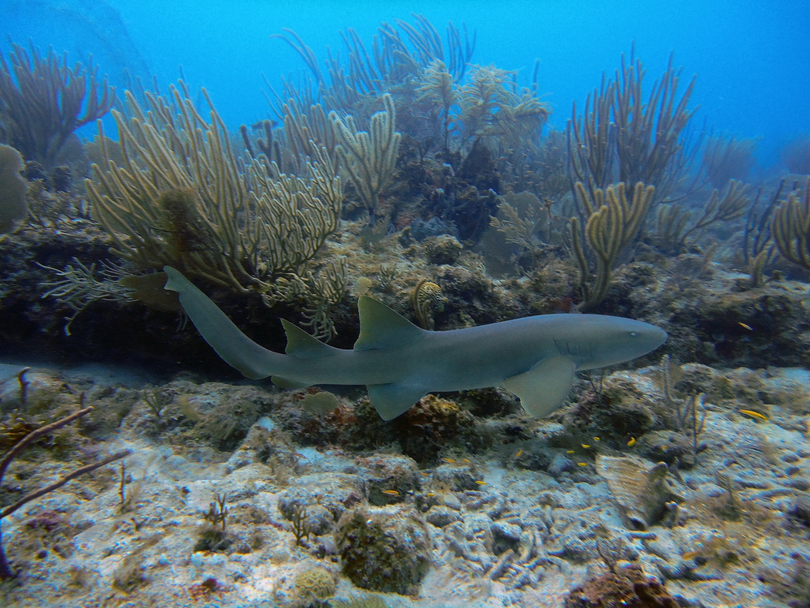

Navigation
Shark Species
When most folks think about where sharks live, many imagine the coasts or the open ocean, but there are many sharks that can be found in the gulf of Mexico. Let's familiarize ourselves with some of them.
Common Species
Atlantic Sharpnose Shark
This shark is on the smaller side, ranging from 2-4 feet fully grown. It earns its name from its long, pointed snout that takes up 4% of its body length. They inhabit the range of the east coast of North America and the gulf of Mexico, and prefer shallower waters. They eat shrimp, crabs, mollusks, worms, and an assortment of small fish. They are listed as Least Concern for conservation, as their small fins make them less desirable for shark finning, however, they're often caught as bycatch in fishing nets.
Blacktip shark
Commonly mistaken for the smaller, similarly named blacktip reef shark, the blacktip shark prefers coastal waters in tropical and temperate regions as opposed to reefs. They can grow from 6-8 feet, and sport iconic dark fins standing out against a gray and white body. Like the spinner shark, which they share many features with, they often leap from the water while spinning. Their diet is composed of bony fish, stingrays, cephalopods, and crustaceans. Their conservation status is Near Threatened, due to their tasty meat, iconic fins, and habitat destruction.
Bonnethead Shark
This charming shark is the smallest hammerhead species, only growing 2.6-3 feet long, and unlike other hammerhead sharks, they do not use their cephalofoils, or "hammers", to swim. It dines on crabs, but it also eats plant matter, as it is the first omnivorous shark that we know of. It spends most of its time in tropical waters. They're classified as Endangered, as their loss of habitat and recreational fishing has caused a large impact on their populations.
Bull Shark
Known for its temper, the bull shark may be responsible for the most attacks on humans, with the strongest bite of all sharks pound-for-pound. They can grow to reach 7-11 feet in length. They can be found in the most varied environments of all sharks, ranging from coastal waters, to rivers, and even freshwater lakes. They feed on fish, birds, turtles, dolphins, and smaller sharks. Since they're found so close to shore and can be fished easily, they are listed as Near Threatened.
Spinner Shark
Similar in appearance to the blacktip shark, the spinner shark have a very "classic" shark design, sporting a gray and white, hydrodynamic body with a pointed snout, while growing to be 6.5-9 feet long. They live in tropical waters, and can be found both in costal regions close to shore and in the open ocean. They mainly eat small fish, stingrays, and cephalopods, and are well known for their feeding habit of rushing into a school, twisting and biting, and launching themselves out of the water. They are classified as Vulnerable due to habitat loss.